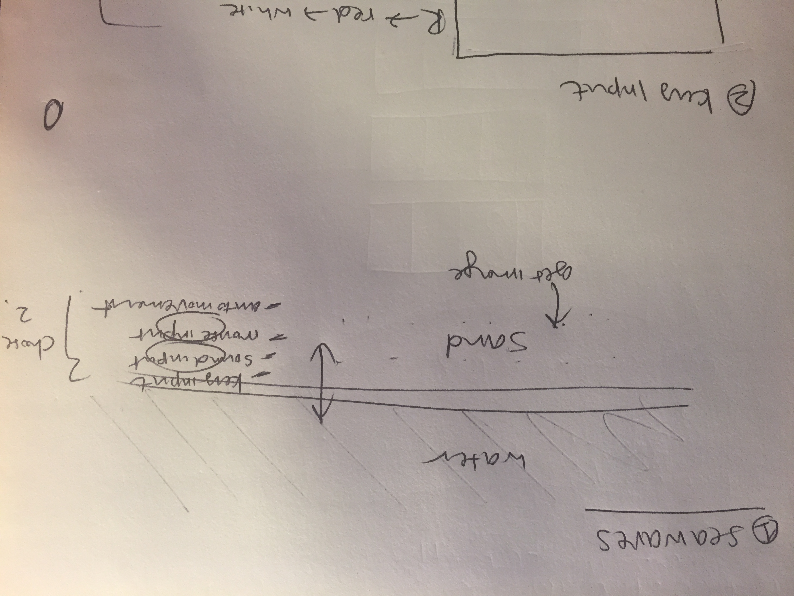

Hi there! I'm Nichole Kim, a full time 1st year MS HCDE student. Along with this course, I'm taking 517 and 508 this quarter.
I come from Psychology background and have not much coding experience- maybe a couple weeks of HTML/CSS and Python in my college years, plus a little dabbling into Java this past summer. I'm definitely looking forward to learning more!
First week's homework was to digitize a piece of art. My work was inspired by a modern art piece from MOMA website. You can view my project here. Below is the original image for my inspiration.
Second project was to create a family of legos that move on the screen & eventually come together in the center. My inspiration was the movie "Inside Out" -- you can see 5 main characters of the movie in my project. Check out how they move right here!
My sketch:
Inspiration image:

Week three's homework was to create a monster that is interactive -- you are able to move the monster's eyes using your mouse, and also make him jump by clicking on it! Here's my interactive minion.
My sketch:
Inspiration image:
This week's homework was to create two little projects that required me to be creative & use all the tools we've learned so far in p5.js.
First project I made is a rocket you can move up and down using the arrow keys. As you travel up and down, the scenery also changes. Here's my Rocket project.
Second project is a seashore where waves can move by mic sound & the mouse movement. Here's my Waves project.
Rocket project sketch:
Waves project sketch:

This 2-week project was to create a visualization of a dataset of my choice. I have created my own little dataset of "the regions visited by Anthony Bourdain during the 6 seasons of his TV show, 'Parts Unknown'".
You can check out my data visualization here!
Dataset credit goes to Netflix "Anthony Bourdain: Parts Unknown".